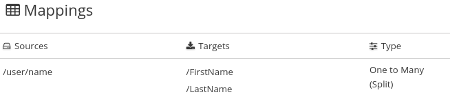
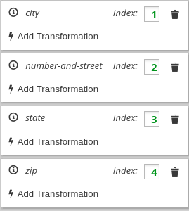
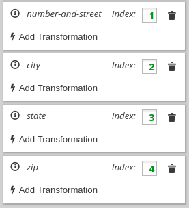
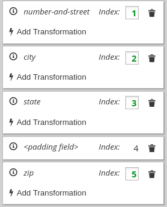

Separating one source field into multiple target fields
In a data mapper step, you can separate a compound source field into multiple
target fields. For example, map the Name field to the FirstName and
LastName fields.
For the source field, you must know what type of content is in each part of this compound field, the order and index of each part of the content, and the separator between parts, such as a space or comma. See Example of missing or unwanted data.
-
In the Sources panel, click the field whose content you want to separate.
-
In the Target panel, click the first field that you want to separate the source field data into.
-
In the Target panel, for each additional target field that you want to contain some of the data from the source field, hover over the field and press CTRL-Mouse1 (CMD-Mouse1 on MacOS) to select it.
When you are done selecting target fields, you should see lines from the source field to each of the target fields that you selected.
In the Mapping Details panel:
-
Under Sources, the data mapper displays Split to indicate that execution of the mapping splits the source field value and maps it to multiple target fields.
-
Under Targets, there is an entry for each target field that you selected.
-
-
In the Mapping Details panel, configure the mapping as follows:
-
Under Sources, in the Delimiter field, accept or select the character in the source field that indicates where to separate the source field values. The default is a space.
-
Optional. Click Add Transformation to apply a transformation to the source field value before it gets mapped to the target field.
-
Under Targets, check the order of the entries for the target fields that you selected. The entries must be in the same order as the corresponding content in the compound source field. It does not matter whether you did not specify a target field for one or more parts of the content in the source field.
If the entries are not in the correct order, drag and drop target field entries to achieve the same order. The data mapper automatically updates the index numbers to reflect the new order.
If you mapped each part of the compound source field to a target field, then skip to the next step.
-
If the source field contains data that you do not need, then in the Mapping Details panel, edit the index of each target field that does not already have the same index as the corresponding data in the source field. Each target field entry must have the same index that the corresponding data has in the source field. The data mapper automatically adds padding fields as needed to indicate unwanted data.
See the example at the end of this procedure.
-
Optional. Click Add Transformation to map the content into the target field and then apply a transformation.
-
-
Optional. Preview the data mapping result:
-
In the upper right of the data mapper, click
 and select
Show Mapping Preview to display a text input field on the source
field and read-only result fields on each target field.
and select
Show Mapping Preview to display a text input field on the source
field and read-only result fields on each target field. -
In the source field’s data input field, enter text. Be sure to enter the separator character between the parts of the field. Click outside the text box to display the mapping result in the read-only fields on the target fields.
If you reorder the target fields or add a transformation to a target field then the result fields on the target fields reflect this. If the data mapper detects any errors, it displays informative messages at the top of the Mapping Details panel.
-
Hide the preview fields by clicking
again and selecting
Show Mapping Preview.If you redisplay the preview fields, any data that you entered in them is still there and it remains there until you exit the data mapper.
-
-
To confirm that the mapping is correctly defined, click to display the mappings defined in this step. A mapping that separates the value of a source field into multiple target fields looks like this: .
You can also preview mapping results in this view. Click
, select
Show Mapping Preview, and enter text as described in the previous step.
Preview fields appear for only the selected mapping. Click another
mapping in the table to view preview fields for it.
Suppose that the source data contains one address field and it uses commas to separate the content parts, for example:
77 Hill Street, Brooklyn, New York, United States, 12345, 6789
In an address field, the parts of the content have these indexes:
| Content | Index |
|---|---|
Number and street |
1 |
City |
2 |
State |
3 |
Country |
4 |
Zip code |
5 |
Zip+4 |
6 |
Now suppose that the target data has four fields for an address:
number-and-street city state zip
To define the mapping, you do the following:
-
Select the source field.
-
In the Mapping Details panel, in the Sources section, select the delimiter, which is a comma in this example.
-
Select the four target fields.
After you do this, in the Mapping Details panel under Targets, there is an entry for each target field that you selected, for example:
.
The data mapper displays the target entries in the order in which
they appear in the data mapper, which is alphabetical. You need to
change this order so that it mirrors the order in the source field.
In this example, the source field contains the number-and-street
content before the city content. To correct the order of the
target entries, edit the city index field to be 2
or drag the city entry so that it is after the number-and-street entry.
The result looks like this:
.
In the target field entries, the index numbers indicate the part of the source field that will be mapped to this target field. One of the index values needs to change to achieve the correct target field value. Consider each target field:
-
number-and-street— In the source field, the number and street content has an index of 1. It is correct to map the index 1 source to thenumber-and-streettarget field. No changes are needed in this target entry. -
city— In the source field, the city content has an index of 2. This target entry is also correct as it is. -
state— In the source field, the state content has an index of 3. This target entry is also correct as it is. -
zip— In the source field, the zip code content has an index of 5. The target field entry index of 4 is wrong. If you do not change it, during execution, the country part of the source field gets mapped to theziptarget field. You need to change the index to 5. This instructs the data mapper to map the index 5 source content to theziptarget field. After you change the index, the data mapper adds a padding field with an index of 4. The result looks like this:
.
This mapping is now complete. Although the source field has additional content at index 6, (zip+4), the target does not need the data and nothing needs to be done.